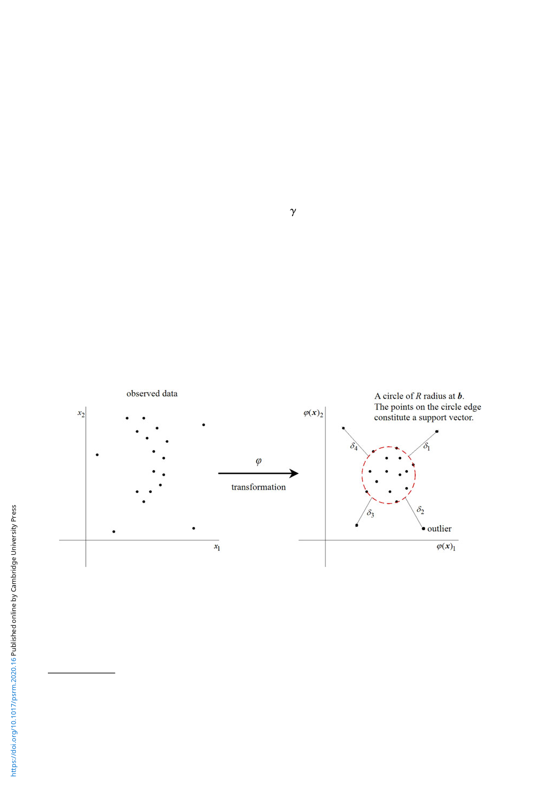

Political Science Research and Methods 103
Conceptually (but not algorithmically), the OCSVM can be considered as a two-step proced-
ure; transforming data with a fairly flexible function w and then fitting the tightest enclosing
circle to the transformed data.9 As seen in Figure 3, the function w maps the observed m
predictors to m-dimensional Cartesian space so that the data are centered at b (in Figure 3,
m = 2). Although such an m-to-m function is hard to even express, it is mathematically
sufficient to define its kernel, K(xj, xk) = w(xj)Tw(xk), which maps two m-length vectors to
a scalar and hence is mathematically tractable.10 The Euclidian distance, for instance, would
be such a kernel, but we can use more flexible kernels as well. A standard choice is the radial
basis function;
Krbf (xj, xk) = exp (−g||xj − xk||),
where γ is a kernel parameter, which represents the influence of a single observation on the over-
all estimate. Larger γ indicates a tighter fit to every observation. The support vector machine with
the radial basis function is so flexible that it can approximate to any finite function (so-called
universal approximator; Hammer and Gersmann, 2003).
Given a specified kernel, the OCSVM searches for the tightest circle that encloses the trans-
formed data points (the red dashed circle in the right pane of Figure 3). However, because it
is not desirable to fit the circle too tightly to the data and risk overfitting, we also allow several
observations to be outside of the circle (four data points in the right pane of Figure 3). This pro-
vides a guard against overfitting. Formally, the loss function and corresponding optimization
Figure 3. Stylized example of the OCSVM.
Note: The figure shows an example of the OCSVM with hypothetical data. The left pane plots the observed events with respect to two
predictors, x1 and x2 (say, longitude and latitude). The right pane plots the observations transformed by a flexible function w. In the right
pane, the red circle is the fitted OCSVM, the points on the edge of the circle constitute a support vector, and points outside of the circle
are outliers (events that reflect stochastic errors). By transforming the circle back to the original space, one can obtain the estimated
zone as well as the outliers.
number of predictors. Given the continuous predictors and low dimensionality, I use the OCSVM in the present analysis.
Although spatial interpolation methods, such as kriging and Gaussian kernel, can be used as well, these methods require
an arbitrary threshold for a binary classification.
9For more detailed mathematical treatment, refer to Schölkopf et al. (2000). The Support Vector Data Description (SVDD)
is mathematically equivalent to the OCSVM in a standard setup.
10The input data must be standardized.